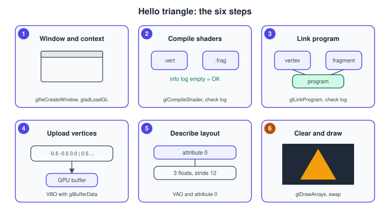
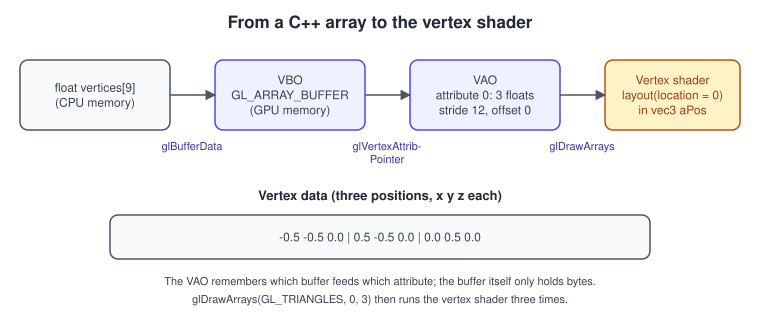
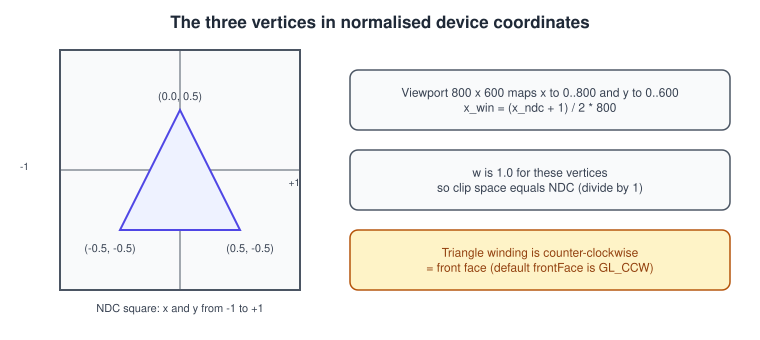

Hello Triangle
|
This content was generated with the assistance of AI and should be verified against the official documentation before being relied on in production. |
The first triangle is the "hello world" of graphics programming, and it is more work than printing a line of text for a reason: in modern OpenGL nothing is drawn by default. The driver does not know what a vertex is, where yours are, how to turn them into screen positions or what colour to give the pixels. You provide all of that: two small shader programs, a block of vertex data and a description of how to read it. This page builds that program step by step, explains each call and the options it takes, shows the result in two flavours (the desktop 4.1 core baseline used throughout this section, and a 4.5 version with direct state access) and ends with a checklist for the most common failure, a black window.
The facts were checked in November 2026. The versions documented are OpenGL 4.6 (GLSL 4.60) and OpenGL ES 3.2 (GLSL ES 3.20); the example itself needs only OpenGL 3.3 core, and it is written for a 4.1 core context so that it also runs on macOS, where OpenGL is deprecated since macOS 10.14 and frozen at 4.1. The code is C++20, built with CMake, GLFW for the window and context and glad2 as the function loader. It runs on Windows, Linux and macOS with any GPU driver that provides OpenGL 4.1; on Android and iOS the same shaders work with the small changes shown near the end. The project setup is covered in Getting Started on Desktop; this page assumes it works and concentrates on what is drawn.
This is step 1 of the Bookshelf GL running example, and it grows from here: a coloured quad for the book spine, then a textured box, then the shelf. The concepts behind the pipeline are in The Rendering Pipeline and the OpenGL-specific walkthrough is The OpenGL Rendering Pipeline.
The six steps

-
Create a window and a context. Request a core profile of the version you want, make it current, load the function pointers.
-
Compile the shaders. One vertex shader and one fragment shader, each checked for errors.
-
Link them into a program. The program is what you select before drawing.
-
Upload the vertex data into a buffer object (VBO).
-
Describe the layout in a vertex array object (VAO): which buffer, which attributes, which format.
-
Clear and draw every frame: select the program, bind the VAO, call
glDrawArrays, swap the buffers.
Steps 1 to 5 run once; step 6 runs every frame. The next sections explain each step and what happens inside the driver.
What flows from the CPU to the vertex shader

Three objects cooperate, and the names confuse beginners:
-
The vertex buffer object (VBO) is a chunk of GPU-accessible memory. It stores bytes and has no idea what they mean.
-
The vertex array object (VAO) is a small table of state: for each attribute number, which buffer it reads from, with which component type, count, stride and offset, and whether it is enabled. In a core profile a VAO must be bound for any draw call; there is no default VAO.
-
The vertex shader input (
layout(location = 0) in vec3 aPos;) receives, per vertex, the three floats that attribute 0 yields.
Pure data (the VBO) is separated from interpretation (the VAO) so that you can reuse one buffer with different layouts, and switch
all of a mesh’s attribute state with a single glBindVertexArray. The detailed rules of this are in
Buffers and Vertex Specification.
Step 1: window and context
GLFW creates the window and the context. The hints must be set before glfwCreateWindow.
| Call | Why |
|---|---|
|
The version you need at least. The driver may return a newer compatible context, and |
|
Core profile: no immediate mode, no matrix stack, no default VAO. Required on macOS for anything above 2.1. |
|
Required on macOS to get a core context; harmless elsewhere. It removes deprecated functionality from the context. |
|
Requests a debug context. It matters from 4.3 (or |
|
Binds the context to this thread. Nothing in GL works before this. |
|
Loads the function pointers for the current context. Returns the version it found, or 0 on failure. |
The same window may report a framebuffer size different from the window size (on a Retina display, twice as large).
glfwGetFramebufferSize returns pixels, glfwGetWindowSize returns screen coordinates. Pass the framebuffer size to
glViewport, which maps normalised device coordinates to pixels; see
The OpenGL Rendering Pipeline.
Step 2 and 3: shaders and the program
A shader is a small program in GLSL (the OpenGL Shading Language). The vertex shader is called once per vertex and must write
gl_Position, the vertex position in clip space. The fragment shader is called once per fragment covered by the triangle and writes
the colour. The language is described in The GLSL Language and the full compile and
link API in Shaders and Programs; here is what the first program needs.
// triangle.vert
#version 410 core
layout(location = 0) in vec3 aPos;
layout(location = 1) in vec3 aColor;
out vec3 vColor;
void main() {
vColor = aColor;
gl_Position = vec4(aPos, 1.0);
}// triangle.frag
#version 410 core
in vec3 vColor;
out vec4 fragColor;
void main() {
fragColor = vec4(vColor, 1.0);
}The first line selects the language version: #version 410 core matches OpenGL 4.1, and #version 460 core would need a 4.6
context. layout(location = 0) lets the program (instead of the linker) choose the attribute number, which is how the VAO refers to
the input. The vertex shader’s out and the fragment shader’s in of the same name and type are matched by the linker, and the
rasteriser interpolates the three vertex colours across the triangle. The fragment shader’s out vec4 is routed to colour number 0
of the framebuffer.
Four calls compile and link each shader and every one of them can fail silently if you do not look:
GLuint shader = glCreateShader(GL_VERTEX_SHADER); // or GL_FRAGMENT_SHADER
glShaderSource(shader, 1, &source, nullptr); // count, array of strings, lengths (nullptr = zero terminated)
glCompileShader(shader);
GLint ok = 0;
glGetShaderiv(shader, GL_COMPILE_STATUS, &ok); // GL_FALSE if the compile failed
// on failure: glGetShaderiv(GL_INFO_LOG_LENGTH) then glGetShaderInfoLogglCreateProgram, glAttachShader, glLinkProgram and glGetProgramiv(GL_LINK_STATUS) do the same for the program. After a
successful link the shader objects can be detached and deleted: the program keeps its compiled code.
The info logs are the most useful debugging tool you have at this point. Their format is driver specific: NVIDIA, AMD, Intel and Mesa each phrase the same error differently, and an empty log after a successful compile is normal (some drivers print warnings even on success).
Step 4 and 5: the VBO and the VAO
// Interleaved: x y z r g b per vertex, 24 bytes each.
const float vertices[] = {
// position colour
-0.5f, -0.5f, 0.0f, 1.0f, 0.0f, 0.0f, // bottom left, red
0.5f, -0.5f, 0.0f, 0.0f, 1.0f, 0.0f, // bottom right, green
0.0f, 0.5f, 0.0f, 0.0f, 0.0f, 1.0f, // top, blue
};
GLuint vao = 0, vbo = 0;
glGenVertexArrays(1, &vao);
glGenBuffers(1, &vbo);
glBindVertexArray(vao); // everything below is recorded into this VAO
glBindBuffer(GL_ARRAY_BUFFER, vbo);
glBufferData(GL_ARRAY_BUFFER, sizeof vertices, vertices, GL_STATIC_DRAW);
// attribute 0: 3 floats at offset 0; attribute 1: 3 floats at offset 12; stride 24 bytes
glVertexAttribPointer(0, 3, GL_FLOAT, GL_FALSE, 6 * sizeof(float), reinterpret_cast<void*>(0));
glEnableVertexAttribArray(0);
glVertexAttribPointer(1, 3, GL_FLOAT, GL_FALSE, 6 * sizeof(float), reinterpret_cast<void*>(3 * sizeof(float)));
glEnableVertexAttribArray(1);The arguments of glVertexAttribPointer(index, size, type, normalized, stride, pointer) are, in order: the attribute number that
matches layout(location = ...); the number of components (1 to 4); the component type in memory; whether integer data should be
normalised to 0..1 (or -1..1) when read as float; the byte distance between the start of one vertex and the next (0 means "tightly
packed"); and the byte offset of the attribute inside the buffer that is bound to GL_ARRAY_BUFFER at this moment. The last
argument is typed const void* for historical reasons; it is an offset, not a pointer, in a core profile. glBufferData(target,
size, data, usage) allocates the storage and copies the data; the usage hint (GL_STATIC_DRAW here) tells the driver how often you
will change it. Both are covered fully in
Buffers and Vertex Specification.
The call to glVertexAttribPointer also records the VBO that is bound to GL_ARRAY_BUFFER at that moment into the VAO. That is
why it is safe to unbind the buffer afterwards, but not to unbind the VAO before specifying attributes. The GL_ELEMENT_ARRAY_BUFFER
binding, by contrast, is stored in the VAO itself.
Step 6: the draw call
glClearColor(0.12f, 0.14f, 0.18f, 1.0f);
glClear(GL_COLOR_BUFFER_BIT);
glUseProgram(program);
glBindVertexArray(vao);
glDrawArrays(GL_TRIANGLES, 0, 3);Source: OpenGL 4 reference: glDrawArrays
glDrawArrays(mode, first, count) starts at vertex number first and processes count vertices, grouping them according to
mode. The primitive modes are:
| Mode | Vertices consumed | Primitive produced |
|---|---|---|
|
1 each |
points (size from |
|
2 per line; shared; shared and closed |
lines (width above 1.0 is not guaranteed in a core profile) |
|
3 per triangle |
independent triangles |
|
3 for the first, then 1 per extra triangle |
a strip, winding alternates automatically |
|
3 for the first, then 1 per extra triangle |
a fan around the first vertex (not available in Metal, Direct3D 12 or WebGPU) |
|
|
input to the tessellation stages |
The topology conversions between these are covered in Meshes and Vertex Data.
Winding matters when culling is on. By default OpenGL does not cull, so a triangle shows whichever way it faces. Once you call
glEnable(GL_CULL_FACE), triangles whose vertices appear counter-clockwise on screen are front faces (glFrontFace(GL_CCW) is
the default) and the back faces are discarded. The example’s vertices are counter-clockwise, so the triangle survives culling.
The complete program
The project has the files CMakeLists.txt and main.cpp. The CMake file downloads GLFW and glad2 so that no installation is needed
(it needs Python 3 for glad2’s generator):
cmake_minimum_required(VERSION 3.24)
project(hello_triangle LANGUAGES CXX)
set(CMAKE_CXX_STANDARD 20)
set(CMAKE_CXX_STANDARD_REQUIRED ON)
include(FetchContent)
FetchContent_Declare(glfw
GIT_REPOSITORY https://github.com/glfw/glfw.git
GIT_TAG 3.4)
set(GLFW_BUILD_DOCS OFF CACHE BOOL "" FORCE)
set(GLFW_BUILD_TESTS OFF CACHE BOOL "" FORCE)
set(GLFW_BUILD_EXAMPLES OFF CACHE BOOL "" FORCE)
FetchContent_Declare(glad
GIT_REPOSITORY https://github.com/Dav1dde/glad.git
GIT_TAG glad2
SOURCE_SUBDIR cmake)
FetchContent_MakeAvailable(glfw glad)
# glad2 generates the loader at configure time: OpenGL 4.1 core.
glad_add_library(glad_gl_core_41 STATIC REPRODUCIBLE API gl:core=4.1)
add_executable(hello_triangle main.cpp)
target_link_libraries(hello_triangle PRIVATE glfw glad_gl_core_41)Source: glad2 loader generator and GLFW build guide
// main.cpp: C++20, OpenGL 4.1 core, GLFW + glad2
#include <glad/gl.h>
#include <GLFW/glfw3.h>
#include <cstdio>
#include <cstdlib>
#include <string>
static const char* kVertexSource = R"(#version 410 core
layout(location = 0) in vec3 aPos;
layout(location = 1) in vec3 aColor;
out vec3 vColor;
void main() {
vColor = aColor;
gl_Position = vec4(aPos, 1.0);
}
)";
static const char* kFragmentSource = R"(#version 410 core
in vec3 vColor;
out vec4 fragColor;
void main() {
fragColor = vec4(vColor, 1.0);
}
)";
static GLuint compile(GLenum type, const char* source) {
GLuint shader = glCreateShader(type);
glShaderSource(shader, 1, &source, nullptr);
glCompileShader(shader);
GLint ok = GL_FALSE;
glGetShaderiv(shader, GL_COMPILE_STATUS, &ok);
if (ok != GL_TRUE) {
GLint length = 0;
glGetShaderiv(shader, GL_INFO_LOG_LENGTH, &length);
std::string log(static_cast<size_t>(length > 0 ? length : 1), '\0');
glGetShaderInfoLog(shader, length, nullptr, log.data());
std::fprintf(stderr, "shader compile error:\n%s\n", log.c_str());
std::exit(EXIT_FAILURE);
}
return shader;
}
static GLuint link(GLuint vs, GLuint fs) {
GLuint program = glCreateProgram();
glAttachShader(program, vs);
glAttachShader(program, fs);
glLinkProgram(program);
GLint ok = GL_FALSE;
glGetProgramiv(program, GL_LINK_STATUS, &ok);
if (ok != GL_TRUE) {
GLint length = 0;
glGetProgramiv(program, GL_INFO_LOG_LENGTH, &length);
std::string log(static_cast<size_t>(length > 0 ? length : 1), '\0');
glGetProgramInfoLog(program, length, nullptr, log.data());
std::fprintf(stderr, "program link error:\n%s\n", log.c_str());
std::exit(EXIT_FAILURE);
}
glDetachShader(program, vs);
glDetachShader(program, fs);
return program;
}
static void onFramebufferSize(GLFWwindow*, int width, int height) {
glViewport(0, 0, width, height);
}
int main() {
glfwSetErrorCallback([](int code, const char* message) {
std::fprintf(stderr, "GLFW error %d: %s\n", code, message);
});
if (!glfwInit()) return EXIT_FAILURE;
glfwWindowHint(GLFW_CONTEXT_VERSION_MAJOR, 4);
glfwWindowHint(GLFW_CONTEXT_VERSION_MINOR, 1);
glfwWindowHint(GLFW_OPENGL_PROFILE, GLFW_OPENGL_CORE_PROFILE);
glfwWindowHint(GLFW_OPENGL_FORWARD_COMPAT, GLFW_TRUE); // required on macOS
GLFWwindow* window = glfwCreateWindow(800, 600, "Bookshelf GL: hello triangle", nullptr, nullptr);
if (!window) {
glfwTerminate();
return EXIT_FAILURE;
}
glfwMakeContextCurrent(window);
glfwSwapInterval(1); // vsync
const int version = gladLoadGL(glfwGetProcAddress);
if (version == 0) {
std::fputs("failed to load OpenGL functions\n", stderr);
return EXIT_FAILURE;
}
std::printf("OpenGL %d.%d, %s\n", GLAD_VERSION_MAJOR(version), GLAD_VERSION_MINOR(version),
reinterpret_cast<const char*>(glGetString(GL_RENDERER)));
glfwSetFramebufferSizeCallback(window, onFramebufferSize);
int fbWidth = 0, fbHeight = 0;
glfwGetFramebufferSize(window, &fbWidth, &fbHeight);
glViewport(0, 0, fbWidth, fbHeight);
// Steps 2 and 3: shaders and program.
GLuint vs = compile(GL_VERTEX_SHADER, kVertexSource);
GLuint fs = compile(GL_FRAGMENT_SHADER, kFragmentSource);
GLuint program = link(vs, fs);
glDeleteShader(vs);
glDeleteShader(fs);
// Steps 4 and 5: VBO and VAO.
const float vertices[] = {
-0.5f, -0.5f, 0.0f, 1.0f, 0.0f, 0.0f,
0.5f, -0.5f, 0.0f, 0.0f, 1.0f, 0.0f,
0.0f, 0.5f, 0.0f, 0.0f, 0.0f, 1.0f,
};
GLuint vao = 0, vbo = 0;
glGenVertexArrays(1, &vao);
glGenBuffers(1, &vbo);
glBindVertexArray(vao);
glBindBuffer(GL_ARRAY_BUFFER, vbo);
glBufferData(GL_ARRAY_BUFFER, sizeof vertices, vertices, GL_STATIC_DRAW);
glVertexAttribPointer(0, 3, GL_FLOAT, GL_FALSE, 6 * sizeof(float), reinterpret_cast<void*>(0));
glEnableVertexAttribArray(0);
glVertexAttribPointer(1, 3, GL_FLOAT, GL_FALSE, 6 * sizeof(float),
reinterpret_cast<void*>(3 * sizeof(float)));
glEnableVertexAttribArray(1);
glBindVertexArray(0);
// Step 6: the loop.
while (!glfwWindowShouldClose(window)) {
glfwPollEvents();
if (glfwGetKey(window, GLFW_KEY_ESCAPE) == GLFW_PRESS) glfwSetWindowShouldClose(window, GLFW_TRUE);
glClearColor(0.12f, 0.14f, 0.18f, 1.0f);
glClear(GL_COLOR_BUFFER_BIT);
glUseProgram(program);
glBindVertexArray(vao);
glDrawArrays(GL_TRIANGLES, 0, 3);
glfwSwapBuffers(window);
}
glDeleteVertexArrays(1, &vao);
glDeleteBuffers(1, &vbo);
glDeleteProgram(program);
glfwDestroyWindow(window);
glfwTerminate();
return EXIT_SUCCESS;
}Configure and run with cmake -S . -B build && cmake --build build && ./build/hello_triangle. A window opens with a
dark background and a triangle that blends red, green and blue; Escape closes it.
Why the coordinates are what they are

The vertex shader writes the position directly, so the triangle’s coordinates are already in the space the rasteriser expects.
Clip space is a four-component space, and w is 1.0 here, so the divide by w changes nothing. The visible region is the
square (cube, in 3D) from -1 to +1 on each axis, called normalised device coordinates (NDC). The viewport transform then maps
NDC x and y to pixels with the origin at the lower left of the window, which is different from most 2D APIs and from Vulkan and
Metal, whose NDC y points down or whose window origin is at the top left. The complete derivation is in
The OpenGL Rendering Pipeline and the matrices that produce clip space from a 3D
scene start in Coordinate Systems and Transforms. The triangle’s z
of 0.0 lies inside the default depth range, and depth testing is off by default, so no depth buffer is needed yet.
The same triangle with direct state access (OpenGL 4.5)
OpenGL 4.5 (and GL_ARB_direct_state_access) lets you create and fill objects without binding them first, which removes a class of
bugs where the wrong object is bound. The set-up of steps 4 and 5 becomes the following. It requires a 4.5 or newer context, so it
does not run on macOS.
// OpenGL 4.5 core: direct state access
GLuint vbo = 0, vao = 0;
glCreateBuffers(1, &vbo);
glNamedBufferStorage(vbo, sizeof vertices, vertices, 0); // immutable storage; 0 = no later updates
glCreateVertexArrays(1, &vao);
glVertexArrayVertexBuffer(vao, 0, vbo, 0, 6 * sizeof(float)); // binding point 0: buffer, offset, stride
glEnableVertexArrayAttrib(vao, 0);
glVertexArrayAttribFormat(vao, 0, 3, GL_FLOAT, GL_FALSE, 0); // attribute 0: 3 floats at relative offset 0
glVertexArrayAttribBinding(vao, 0, 0); // attribute 0 reads from binding point 0
glEnableVertexArrayAttrib(vao, 1);
glVertexArrayAttribFormat(vao, 1, 3, GL_FLOAT, GL_FALSE, 3 * sizeof(float));
glVertexArrayAttribBinding(vao, 1, 0);
// the draw call is unchanged: glUseProgram(program); glBindVertexArray(vao); glDrawArrays(GL_TRIANGLES, 0, 3);The split into a format (what is an attribute) and a binding (which buffer, which stride) is the model the explicit APIs use and the reason this style is recommended whenever 4.5 is available. See Direct State Access.
The same triangle on OpenGL ES
Only the shader headers change when the program targets OpenGL ES 3.0 or later. A fragment shader must declare the default precision of floats, because GLSL ES requires it.
// triangle_es.vert
#version 300 es
layout(location = 0) in vec3 aPos;
layout(location = 1) in vec3 aColor;
out vec3 vColor;
void main() {
vColor = aColor;
gl_Position = vec4(aPos, 1.0);
}
// triangle_es.frag
#version 300 es
precision mediump float;
in vec3 vColor;
out vec4 fragColor;
void main() {
fragColor = vec4(vColor, 1.0);
}The buffer and vertex-array calls are the same in ES 3.0 and later. ES 2.0 has no VAOs in the core API; older tutorials call
glEnableVertexAttribArray and glVertexAttribPointer every frame, before each draw. The window and context come from EGL (see
EGL) or, on Android, from GLSurfaceView
(OpenGL ES on Android). The version and portability rules of GLSL and GLSL ES
are in GLSL ES and Portability.
The black window checklist
A blank window is the most common first result, because the API never raises an exception. Walk through this list in order.
-
Is the context created? Print
glGetString(GL_VERSION). IfglfwCreateWindowreturned null, the error callback explains why (for example, no 4.1 core support, or missingGLFW_OPENGL_FORWARD_COMPATon macOS). -
Did the shaders compile and link? Print the info logs. A version mismatch (
#version 460 coreon a 4.1 context) is a typical error. -
Is a VAO bound when you draw? Core profile draws with no VAO bound fail with
GL_INVALID_OPERATION. -
Does the layout match the data? A wrong stride or offset reads other floats and draws garbage or nothing. Compare with the interleaved-layout figure in Buffers and Vertex Specification.
-
Are the attributes enabled?
glEnableVertexAttribArrayper attribute, while the VAO is bound. -
Is the triangle inside NDC, facing the camera, not culled? A triangle with clockwise winding disappears when back-face culling is on.
-
Is the viewport set? On high-density displays, set it from
glfwGetFramebufferSize, not the window size, or the triangle renders in a quarter of the window. -
Are errors being read? In a 4.3 or newer context, install the debug callback of Debugging and Tools; otherwise poll
glGetErrorafter suspect calls. -
Did you call
glfwSwapBuffersandglfwPollEvents? Without polling, the window may never be shown on some systems.
Also remember that the clear colour and the triangle colour must differ. A black triangle on a black clear is a very common false alarm.
Common mistakes
-
Passing a count in bytes where a count of vertices is expected.
glDrawArrays(GL_TRIANGLES, 0, 3)draws three vertices, notsizeof verticesof them. -
Forgetting
sizeofrules. Usesizeof verticesfor an array, never for a pointer, and neversizeof(float) * 9when the array has 18 floats. -
Specifying attributes before binding the buffer.
glVertexAttribPointercaptures whichever buffer is bound toGL_ARRAY_BUFFERat the moment of the call. -
Deleting a shader before linking. Deleting after a successful link is safe; deleting before is not.
-
Assuming that tightly packed means a stride of 0. This is true for the legacy call. In the DSA API, the stride is always explicit.
-
Mixing up macOS and desktop capabilities. Anything in this page that needs 4.2 or newer (
layout(binding = ...),glTexStorage, debug output) is not available in a macOS context; see Versions, Profiles and Extensions.
Performance notes
A triangle is not a performance test, but the habits start here:
-
Create buffers and vertex arrays once; do not rebuild them every frame.
-
Group draws that share a program and VAO; switching programs is costlier than switching uniforms.
-
Compile and link once at start up, and cache program binaries where the driver supports them (see Shaders and Programs).
-
The vsync call
glfwSwapInterval(1)limits the frame rate to the display refresh and saves power. Measure with it off (0) when profiling. See Performance and Profiling.
Where older material is outdated
| Older tutorials and books show | Today |
|---|---|
|
Removed from the core profile in OpenGL 3.1/3.2 (2009) and unavailable in macOS core contexts. Use a VBO, a VAO and shaders as above. |
|
Removed from core. Colours are vertex attributes and matrices are uniforms, usually computed with GLM. |
GLUT for the window; |
GLUT is unmaintained. Use GLFW (as here) or SDL, plus a loader such as glad2. |
|
GLSL ES 1.00 and GLSL 1.20 keywords; since GLSL 1.30/ES 3.00 use |
ES 2.0 samples that call |
ES 3.0 has VAOs; bind one per mesh. |
Every object is bound before it is modified |
|
References
-
OpenGL 4 reference pages: https://registry.khronos.org/OpenGL-Refpages/gl4/
-
glDrawArrays: https://registry.khronos.org/OpenGL-Refpages/gl4/html/glDrawArrays.xhtml
-
glVertexAttribPointer: https://registry.khronos.org/OpenGL-Refpages/gl4/html/glVertexAttribPointer.xhtml
-
glCompileShader: https://registry.khronos.org/OpenGL-Refpages/gl4/html/glCompileShader.xhtml
-
glLinkProgram: https://registry.khronos.org/OpenGL-Refpages/gl4/html/glLinkProgram.xhtml
-
OpenGL Shading Language 4.60 specification: https://registry.khronos.org/OpenGL/specs/gl/GLSLangSpec.4.60.html
-
OpenGL ES Shading Language 3.20 specification: https://registry.khronos.org/OpenGL/specs/es/3.2/GLSL_ES_Specification_3.20.html
-
OpenGL Wiki, Vertex Specification: https://wikis.khronos.org/opengl/Vertex_Specification
-
GLFW documentation: https://www.glfw.org/docs/latest/
-
glad2 generator: https://gen.glad.sh/
-
OpenGL SuperBible, 4th edition (publisher page): https://www.informit.com/store/opengl-superbible-comprehensive-tutorial-and-reference-9780321498823
-
OpenGL ES 2.0 Programming Guide (publisher page): https://www.informit.com/store/opengl-es-2.0-programming-guide-9780321502797
-
OpenGL ES 3.0 Programming Guide (publisher page): https://www.informit.com/store/opengl-es-3.0-programming-guide-9780321933881